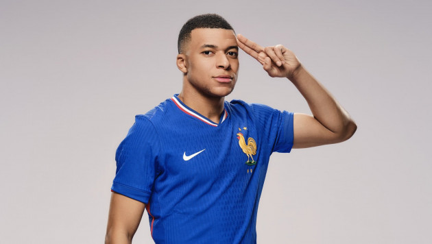

 Нападающий сборной Франции и мадридского «Реала» Килиан Мбаппе на текущем этапе своей карьеры хочет сосредоточиться преимущественно на выступлениях за клуб, поскольку обладает огромным желанием выиграть «Золотой мяч» — 2025. Об этом сообщает Footmercato.По информации источника, 25-летний нападающий хочет принимать участие только в важных матчах за французскую национальную команду, поскольку желает минимизировать риски получения травмы. Мбаппе уведомил тренерский штаб «трёхцветных», что не приедет на октябрьский сбор, ещё во время сентябрьских матчей Лиги наций УЕФА. Ранее сообщалось, что нападающий не был вызван в сборную Франции в октябре, чтобы восстановиться от травмы. Итальянский бывший главный тренер мадридского «Реала» Фабио Капелло высказался о новичке испанской команды, французском футболисте, Килиане Мбаппе, сообщает Sports.kz. «Когда в „Реал“ приходит большая звезда, он должен понимать, что должен работать, как и любой другой игрок. Потому что в этом клубе не одна звезда, а много», — передает слова именитого в прошлом специалиста издание Mundo Deportivo. Отметим, что в 11 встречах за «королевский» клуб на старте текущего сезона 25-летний французский нападающий отметился уже семью забитыми голами и также одной результативной передачей. Пресс-служба сборной Франции назвала имя капитана команды на предстоящий матч с Израилем в Лиге наций, сообщает Sport Plus Qazaqstan. В отсутствие травмированного Килиана Мбаппе на следующую игру команду выведет другой футболист «Реала» Орельен Тчуамени. Матч Лиги наций Израиль — Франция состоится 10 октября в Будапеште и начнется в 23:45 по казахстанскому времени. Один из лучших футболистов мира Килиан Мбаппе попал в крупный скандал. На октябрьские матчи сборной Франции нападающего мадридского «Реала» не вызвали из-за травмы. Однако уже после объявления состава национальной команды Мбаппе выходил на поле в матче за клуб, чем вызвал недоумение у болельщиков и тренерского штаба сборной. А на днях стало известно, что Килиан прямо в день матча Лиги наций между Францией и Израилем посетил ночной клуб в Стокгольме. Там он, видимо, продолжал «восстановление».